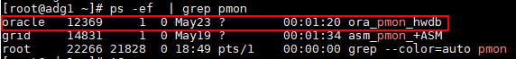
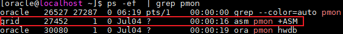

备份Oracle数据库前，请参考表1提前准备相关信息。以下信息均会在步骤4：注册数据库章节使用。

- 请确保Oracle数据库为Open状态，再进行相关查询操作，Oracle数据库状态查询请参考步骤1：检查并配置数据库环境。
- 本节操作如无特殊说明均以Oracle 19版本为例进行，Oracle版本不同操作可能存在差异，请以实际为准。
- 对于以集群方式部署的Oracle数据库，如无特殊说明，均需登录集群下所有主机执行以下操作。
准备项 |
是否必须 |
获取方式 |
数据使用章节 |
|---|---|---|---|
名称 |
必选 |
要保护的数据库名称。 该名称与生产环境的数据库名称保持一致。一般数据库的name与db_unique_name一致，当两者不一致时，请配置为db_unique_name。可通过以下SQL语句查看name与db_unique_name。
select name,db_unique_name FROM v$database; |
|
主机 |
必选 |
Oracle数据库所在的主机名称或IP地址。如果是集群部署，请获取Oracle数据库分布的所有主机名称或IP地址。 |
|
数据库认证方式（适用于Linux操作系统） |
必选 |
数据库认证方式，查询方法如下：
说明：
|
|
数据库认证方式（适用于Windows操作系统） |
必选 |
数据库认证方式，查询方法如下：
说明：
当指定了多个代理主机执行备份任务时，则要求数据库必须采用数据库认证方式。 |
|
数据库用户名及密码 |
可选 |
当数据库认证方式为数据库认证时，需要获取具有sysdba权限的数据库用户名及密码。 |
|
数据库安装用户名（适用于Linux操作系统） |
必选 |
安装数据库的用户，如oracle。 该用户可登录数据库主机，执行以下命令查询。 ps -ef | grep pmon 回显类似如下，xxx_pmon_hwdb所在行的用户即为安装数据库的用户。  |
|
数据库安装用户名（适用于Windows操作系统） |
必选 |
安装数据库的用户。后续操作均以oracle用户为例。 该用户名可登录数据库主机查询，操作如下：
|
|
安装用户名 |
可选 |
ASM的安装用户名，后续操作均以grid用户为例。 说明：
对于集群场景，登录任一Oracle数据库主机，执行以下操作即可。 该用户可登录Oracle数据库主机，执行以下命令查询ASM的安装用户名。 ps -ef | grep pmon 回显类似如下，xxx_pmon_+ASM所在行的用户即为ASM的安装用户。  |
|
ASM认证（适用于Linux操作系统） |
可选 |
如果数据库使用了ASM，则需要获取ASM认证信息。
|
|
ASM认证（适用于Windows操作系统） |
可选 |
如果数据库使用了ASM，则需要获取ASM认证信息。
|
|
ASM用户名及密码 |
可选 |
当认证方式为ASM认证时，需要获取具有sysdba权限的ASM用户名及密码。 |